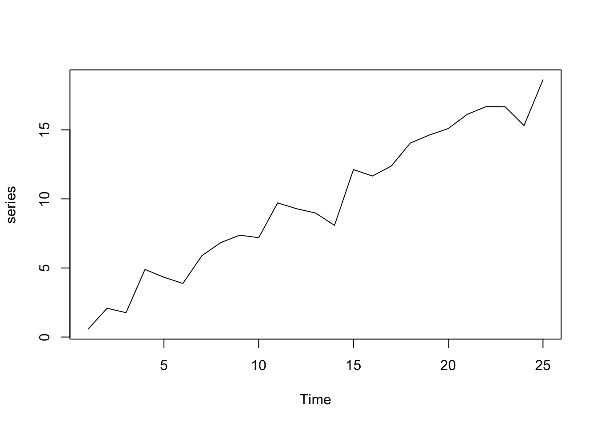
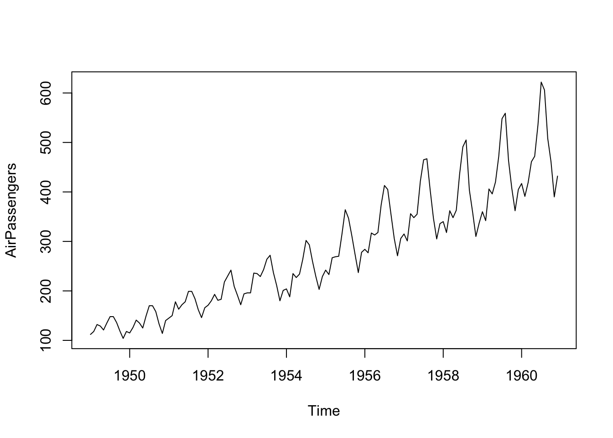
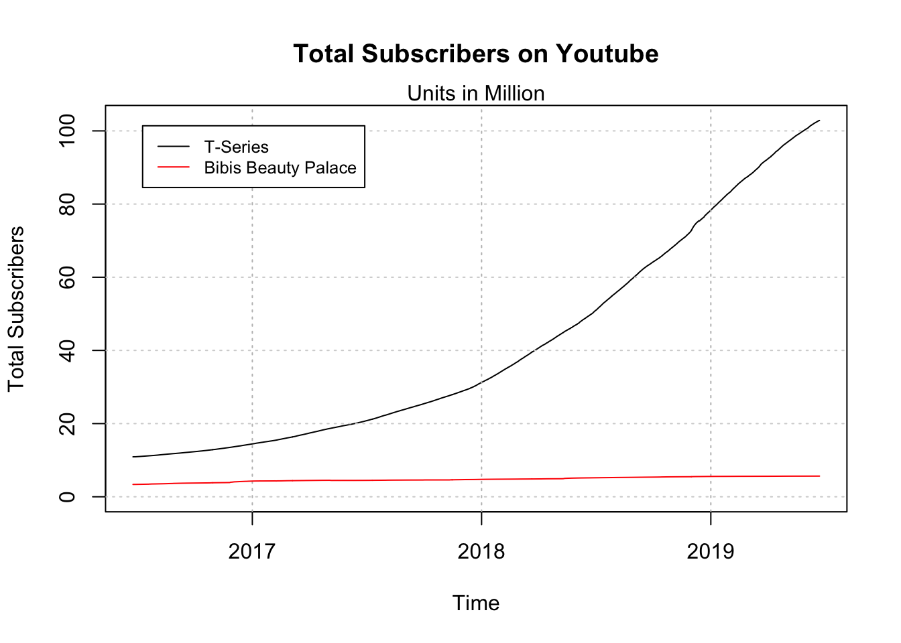

Chapter 10 Forecasting
Forecasting is an important and common task in businesses to schedule production, arrange transportation, allocate personnel or financial resources and provide guidance for planning processes. Generally, the terms Forecasting, Planning, and Goals should be distinguished, but are commonly intermingled in practice.
Forecasting is a process that tries to predict future events or figures as accurately as possible. All given information at the time of forecast creation (at the forecast origin) should be used and known future events should be incorporated into the forecast generation process.
Goals are defined targets that the organization, division or person would like to achieve. While goals should be defined realistically and therefore based on forecasts and derived as output of (a not over-ambitious) planning process, this is not always the case. Goals can (and often are) defined due to organizational pressure or established for political reasons, without convincing strategies of how to achieve them.
Planning is the process that connects goals and forecasts and involves figuring out paths and actions to align forecasts and goals. This can either be by adjusting goals, but usually focusses on measures that increase performance figures. As a side-effect, forecasts generated by a suitable method, start to pick up trends visible in new data so that the forecasts (hopefully) converge towards the established goals.
Management usually distinguishes between short-term, medium-term and long-term tasks, which in term means that modern organizations require forecasts for all three horizons as part of the decision preparation and making process. Dependent on the business context of the company short-term forecasts can be used for scheduling and allocation tasks, which often also requires forecasts for demand or sales figures. Medium-term activities aim to determine future requirements in terms of materials, machinery, etc. and must be adaptive to the commercial environment. Long-term forecasts are usually incorporated in the planning of strategic scenarios and must be made with respect to environmental factors, shifts in the market landscape and additional external effects.
Predicting future events, sales or demand figures grows in difficulty with the time offset from the day of forecast generation. Academia has led to many approaches that can be used for all - short, medium and long-term horizons - but for the sake of simplicity, we concentrate on methods that can be used to generate short- to medium-term forecasts.
10.1 Time Series Data
Before we can start forecasting some data, we need to talk about the time series data-structure that can be represented in R and is available via the ts()-function. A time series is a series of data points ordered along a time-axis. Most commonly used are time with data points that are equally spaced, which is referred to as a sequence in discrete-time. While there are also datasets and forecasting methods for non-equidistant series (aka continuous time-series), the vast majority of applications, especially in business administration, concentrates on data with equidistant observations and in discrete-time.
The following code snippet shows how to simulate a time series based on a linear trend with intercept. This is essentially the same concept as linear regression but reversed. First, the coefficients for the trend line are set, then the true line is calculated and afterward overlaid with a standard normally distributed error.
set.seed(1) # Fix the RNG
b0 <- 0.5 # Intercept Coefficient
b1 <- 0.7 # Slope Coefficient
x <- 1:25 # Abscissa Data (Time Index)
signal <- b0 + b1 * x # Generate the Signal
noise <- rnorm(length(x)) # Generate the Noise
series <- ts(signal + noise) # Combine Signal and Noise
plot(series)
However, obviously, time series data can be more complex and also exhibit a special time structure. While the time series properties are not explicitly defined, one can easily imagine a series that has a more complex structure than just a time index as above. Time series data without an underlying structure is assigned a frequency value of 1, which can, for example, stand four hourly data. Adding more complex frequency information to the data allows adding calendarial structure, monthly data, meaning a time series with a single data point for each month, for example, has frequency = 12. An example of a monthly time series is the AirPassengers series, that shows the monthly total of international airline passengers from 1949 to 1960. Some additional information for this series is available via ?AirPassengers.
#R> Jan Feb Mar Apr May Jun Jul Aug Sep Oct Nov Dec
#R> 1949 112 118 132 129 121 135 148 148 136 119 104 118
#R> 1950 115 126 141 135 125 149 170 170 158 133 114 140
#R> 1951 145 150 178 163 172 178 199 199 184 162 146 166
#R> 1952 171 180 193 181 183 218 230 242 209 191 172 194
#R> 1953 196 196 236 235 229 243 264 272 237 211 180 201
#R> 1954 204 188 235 227 234 264 302 293 259 229 203 229
#R> 1955 242 233 267 269 270 315 364 347 312 274 237 278
#R> 1956 284 277 317 313 318 374 413 405 355 306 271 306
#R> 1957 315 301 356 348 355 422 465 467 404 347 305 336
#R> 1958 340 318 362 348 363 435 491 505 404 359 310 337
#R> 1959 360 342 406 396 420 472 548 559 463 407 362 405
#R> 1960 417 391 419 461 472 535 622 606 508 461 390 432
Obviously, the process that is required to simulate a time series comparable to AirPassengers is not just a single linear trend as the series clearly shows peaks for the summer months each year. This data feature is called seasonality and the process that yields the respective time series (without the error term) is called a Data Generation Process (DGP). Forecasting in a technical sense is essentially applying methods to identify this DGP by separating the observed data into signal and noise. The statistical and mathematical description of the DGP can then be used to extrapolate the deterministic structure of the data. Forecasts generated on the basis of this idea deliver future values, that are most likely to be realized in the future (to the best of the knowledge at the time of generation).
10.2 Forecasting Process
While a forecasting process can be arbitrarily complex, every forecaster should pass through the following five steps: 1) Problem Definition, 2) Information Gathering, 3) Explanatory Analysis, 4) Configure and Estimate Models, 5) Generate and Evaluate Forecasts. While all of these steps are equally important, in some academic or practical applications the first two are defined by the concrete forecasting task - it is, however, still very valuable to challenge given problem definitions, assumptions or data, especially when one does not have insights into every substep of the stages one and two. The following figure illustrates the process.
Figure 10.1: Simple Forecasting Process
Step 1: Problem definition.
Often this is the most difficult part of forecasting. Defining the problem carefully requires an understanding of the way the forecasts will be used, who requires the forecasts, and how the forecasting function fits within the organization requiring the forecasts. A forecaster needs to spend time talking to everyone who will be involved in collecting data, maintaining databases, and using the forecasts for future planning.
Step 2: Gathering information.
There are always at least two kinds of information required: (a) statistical data, and (b) the accumulated expertise of the people who collect the data and use the forecasts. Often, it will be difficult to obtain enough historical data to be able to fit a good statistical model. In that case judgmental forecasting can be used. Occasionally, old data will be less useful due to structural changes in the system being forecast; then we may choose to use only the most recent data. However, good statistical models will handle evolutionary changes in the system so that there is not necessarily a need to throw away good data.
Step 3: Preliminary (exploratory) analysis.
Always start by graphing the data. Are there consistent patterns? Is there a significant trend? Is seasonality important? Is there evidence of the presence of business cycles? Are there any outliers in the data that need to be explained by those with expert knowledge?
Step 4: Choosing and fitting models.
The best model to use depends on the availability of historical data and the way in which the forecasts are to be used. It is common to compare two or three potential models. Each model is itself an artificial construct that is based on a set of assumptions (explicit and implicit) and usually involves one or more parameters which must be estimated using the known historical data. However due to the focus of this section we focus on one statistical model and compare this with judgemental forecasts generated by the course participants.
Step 5: Using and evaluating a forecasting model.
Once a model has been selected and its parameters estimated, the model is used to make forecasts. The performance of the model can only be properly evaluated after the data for the forecast period have become available. Additionally the real accuracy of a method can only be assesed on data that is not incorporated in the modelling process; we therefore always test on unseen data. There are also organizational issues in using and acting on the forecasts. When using a forecasting model in practice, numerous practical issues arise such as how to handle missing values and outliers for which additional tools are needed.
Source: The description of the forecasting process can be found in: Hyndman, R.J., & Athanasopoulos, G. (2018) Forecasting: principles and practice, 2nd edition, OTexts: Melbourne, Australia.
10.3 Real Data
If the download does not work for some reason you can obtain the files manually from the course notes and use the function readRDS to load them into R.
| Description | Download Link |
|---|---|
| YT Subscriber Bibis Beatuy Palace | DOWNLOAD |
| YT Subscriber Tseries | DOWNLOAD |
plot(tseries.subs$TotalSubscribers/10^6, x=tseries.subs$date,
ylim=c(0,max(max(tseries.subs$TotalSubscribers),
max(bibi.subs$TotalSubscribers))/10^6),
ylab="Total Subscribers", xlab="Time",
main="Total Subscribers on Youtube",
type="l")
mtext("Units in Million")
grid(nx=0, ny=NULL)
s <- sapply(tseries.subs$date[grepl(tseries.subs$date,pattern = "01-01")],
function(x){abline(v=x,col="grey",lty="dotted")})
lines(x=bibi.subs$date, y=bibi.subs$TotalSubscribers/10^6,col="red")
legend("topleft", legend=c("T-Series", "Bibis Beauty Palace"),
col=c("black", "red"), lty=1, cex=0.8, inset=.05)
While both curves look fairly smooth the day-to-day changes for the last month show that the data fairly fluctuates over time with a roughly constant absolute growth.
n <- 31
t.diff <- ts(diff(tail(tseries.subs$TotalSubscribers, n)))
b.diff <- ts(diff(tail(bibi.subs$TotalSubscribers, n)))
par(mfrow=c(2,1),mar=c(3,4,2,1))
plot(y=t.diff,
x=tail(tseries.subs$date,n-1),
type="b",ylab="Subscribers",
main="Day-to-Day Subscriber Growth")
abline(h=0,lty="dotted",col="grey")
mtext("T-Series")
plot(y=b.diff,
x=tail(bibi.subs$date,n-1),
type="b",ylab="Subscribers", col="red")
abline(h=0,lty="dotted",col="grey")
mtext("Bibis Beauty Palace")10.4 Judgemental Forecasting
Forecasting using judgment is common in practice and in many cases the only feasible option. The major advantage is that judgemental (human-generated) forecasts can be obtained even though there is a complete lack of historical data, a new product is being launched, or a new competitor enters the market. Practically speaking one also often encounters situations where the dataset is incomplete or becomes available with huge delays (e.g.quarterly delays for macroeconomic data). Studies have shown that domain knowledge and actual data improve the quality of these human-generated forecasts.
To have sufficient forecasts available we are now going to create a judgemental forecast that we compare an automatically generated one. Sheets and information for the generation of the judgemental forecasts are provided in the accompanying lecture and will be made available below.
10.5 Exponential Smoothing
Exponential smoothing was proposed in the late 1950s (Brown, 1959; Holt, 1957; Winters, 1960), and has motivated some of the most successful forecasting methods. Forecasts produced using exponential smoothing methods are weighted averages of past observations, with the weights decaying exponentially as the observations get older. In other words, the more recent the observation the higher the associated weight. This framework generates reliable forecasts quickly and for a wide range of time series, which is a great advantage and of major importance to applications in industry.
\[ L_t = \alpha \cdot y_t + (1-\alpha)\cdot(L_{t-1}+T_{t-1}) \\ T_t = \gamma \cdot (L_t - L_{t-1}) + (1-\gamma) \cdot T_{t-1} \] When all values are given and calculated one can easily generate forecast using the following forecasting function for future time horizons \(h\).
\[ f_t(h) = L_t + T_t \cdot h \]
However as the dependence between a value and the previous value is recursive and can easily be seen from the formulas above, the values for the Level \(L_t\) and the Trend \(T_t\) reach at some point a time index of \(t=0\), which is obviously not observed. These values at \(t=0\) are called initial values and need to be set using an appropriate strategy. While there are many possible ways (including complicated procedures for estimating the initial values) a straight forward and sufficiently performant procedure to set the values is given by:
\[ L_0 = y_1 \\ T_0 = y_2 - y_1 \]
In order to generate a forecast we now already have some data and performed some explanatory analysis. To generate a forecasting model we now need to implement the method in R so that we do not have to calculate everything by hand. Afterward, we need to apply the function that we wrote and calculate all the level and trend values. However, in order to calculate these values, we need the smoothing constants \(\alpha\) and \(\gamma\). However, in practice, these are unknown, which is why we need to estimate them. Arguing in the same way as we do for regression, the chosen values for \(\alpha\) and \(\gamma\) should configure our exponential smoothing value in a way that it fits best to the data, which we can measure using an error measure such as the Mean Squared Error (MSE). After obtaining the best values for the smoothing constants, we can finally apply exponential smoothing to calculate level and trend values and afterward use the forecasting function to extrapolate the data for future horizons, which is called forecasting.
10.5.1 Implementing HES
In order to have a simple example let us implement and illustrate the whole process using a very short and artificially generated time series instead of the long youtube subscribers series. This facilitates development and the explanation of the concepts. Our example time series consists of only four observations:
#R> Time Series:
#R> Start = 1
#R> End = 4
#R> Frequency = 1
#R> [1] 195 198 200 203Implementing Holts Exponential Smoothing Method can be done directly by translating the given equations into R code. These smoothing equations are applied iteratively. In addition to the Level and Trend
\[ y_t = \hat{y}_t + \hat{e}_t \\ \hat{y}_t = \hat{L}_t + \hat{T}_t \]
holtExponentialSmoothing <- function(yt, alpha, gamma){
# Setting initial Values
l0 <- yt[1]
t0 <- yt[2] - yt[1]
# Intialize vectors for iterative calculations
level <- l0
trend <- t0
# Calculate fit
for (idx in 2:(length(yt)+1)){
level[idx] <- alpha * yt[idx-1] + (1-alpha) * (level[idx-1] + trend[idx-1])
trend[idx] <- gamma * (level[idx]-level[idx-1]) + (1-gamma) * trend[idx-1]
}
# Calculate and Return results
fitted <-(trend+level)[-length(trend)]
residuals <- yt - fitted
return(list(fitted=fitted,residuals=residuals,yt=yt,
trend=trend,level=level,
alpha=alpha, gamma=gamma,
l0=l0, t0=t0))
}10.5.2 Finding best alpha and gamma values
Following the line of arguments that we already discussed we are essentially searching for a MSE that we can calculate based on the residuals of a given model.
\[ MSE_{\alpha,\gamma} = \frac{1}{T} \sum_{i=1}^{T} \hat{e}_i^2 \] We are now looking for the combination of \(\alpha\) and \(\gamma\) that minimizes the MSE in dependence of the smoothing constants that we can configure. While there are many possible optimization routines available, most of them are algebraically complex and would need additional theoretical knowledge in order to understand and use them. Therefore, we are applying a more direct search routine, which is called grid search.
Grid searching routines try a combination of plausible values and calculate the error measure of interest for all desired combinations of the values. From a computational perspective, this approach is not very efficient but works reasonably well for our purpose. The following code snippet performs this parameter search and returns over a parameter space with a comparably small resolution. By increasing the resolution the process takes considerably longer, but the considered parameters are more precise in return.
resolution <- 10
parameterspace <- seq(0,1,1/resolution)
mseMat <- matrix(NA, nrow=length(parameterspace), ncol=length(parameterspace))
for(adx in parameterspace){
for(gdx in parameterspace){
rdx <- round(adx*resolution + 1, 0) # Recalculate Row index
cdx <- round(gdx*resolution + 1, 0) # Recalculate Col index
mod <- holtExponentialSmoothing(yt=yt, alpha=adx, gamma=gdx)
mseMat[rdx,cdx] <- mean(mod$residuals^2)
}
}
rownames(mseMat) <- paste0("a=",parameterspace)
colnames(mseMat) <- paste0("g=",parameterspace)
round(mseMat,3)#R> g=0 g=0.1 g=0.2 g=0.3 g=0.4 g=0.5 g=0.6 g=0.7 g=0.8 g=0.9
#R> a=0 12.500 12.500 12.500 12.500 12.500 12.500 12.500 12.500 12.500 12.500
#R> a=0.1 9.396 8.965 8.557 8.171 7.805 7.460 7.134 6.827 6.538 6.266
#R> a=0.2 7.186 6.581 6.044 5.568 5.150 4.784 4.467 4.195 3.964 3.769
#R> a=0.3 5.625 4.997 4.479 4.059 3.724 3.464 3.269 3.128 3.035 2.980
#R> a=0.4 4.531 3.958 3.527 3.214 2.999 2.863 2.790 2.765 2.777 2.815
#R> a=0.5 3.770 3.285 2.959 2.757 2.649 2.610 2.620 2.664 2.727 2.799
#R> a=0.6 3.245 2.857 2.630 2.520 2.491 2.515 2.572 2.646 2.725 2.805
#R> a=0.7 2.892 2.594 2.452 2.413 2.440 2.504 2.587 2.679 2.772 2.866
#R> a=0.8 2.666 2.451 2.380 2.397 2.467 2.564 2.677 2.798 2.929 3.072
#R> a=0.9 2.540 2.401 2.393 2.464 2.579 2.721 2.884 3.069 3.282 3.532
#R> a=1 2.500 2.435 2.493 2.624 2.803 3.020 3.277 3.584 3.958 4.421
#R> g=1
#R> a=0 12.500
#R> a=0.1 6.011
#R> a=0.2 3.609
#R> a=0.3 2.958
#R> a=0.4 2.872
#R> a=0.5 2.875
#R> a=0.6 2.881
#R> a=0.7 2.962
#R> a=0.8 3.233
#R> a=0.9 3.830
#R> a=1 5.000The round when recalculating the row and column indices rdx and cdx ensures that we only get real indices and do not run into precision errors, when the resolution parameter is increased.
Given the calculated Mean Square Error Values for all combinations, we can now select the best parameter combination, by filtering the parameterspace vector based using the MSE values. These values lead to the lowest MSE for the training set. They, therefore, represent the values that lead to the best adaption of the method to the data (as the error is minimized). We now assume that the parameter combination that creates the best fit to the data is also good when extrapolating the time series to future values and leads to small error values there as well.
#R> [1] 0.8#R> [1] 0.2hesGridSearch that performs the paramter estimation conditional on the time-series yt and with a user defineable resolution argument.
## Solution to Excercise
hesGridSearch <- function(yt, resolution = 10){
parameterspace <- seq(0,1,1/resolution)
mseMat <- matrix(NA, nrow=length(parameterspace), ncol=length(parameterspace))
for(adx in parameterspace){
for(gdx in parameterspace){
rdx <- round(adx*resolution + 1, 0) # Recalculate Row index
cdx <- round(gdx*resolution + 1, 0) # Recalculate Col index
mod <- holtExponentialSmoothing(yt=yt, alpha=adx, gamma=gdx)
mseMat[rdx,cdx] <- sqrt(mean(mod$residuals^2))
}
}
rownames(mseMat) <- paste0("a=",parameterspace)
colnames(mseMat) <- paste0("g=",parameterspace)
alpha.best <- parameterspace[which.min(apply(mseMat, 1, min))]
gamma.best <- parameterspace[which.min(apply(mseMat, 2, min))]
return(c(alpha=alpha.best,gamma=gamma.best))
}REMARK: Please keep in mind that the examples in this course are designed to illustrate a simplified version of the forecasting process and to get an impression of a quite successful forecasting method. However, real-world applications are usually much more complex. While this is true for most methods themselves this also applies to the parameter estimation and optimization processes. From a practical perspective, all aspects of statistical learning such as bagging, boosting, cross-validation and constructing ensembles are also incorporated in the model building process but are not covered here.
10.5.3 Generating Forecasts
The process of generating the actual forecasts conditional on the estimated parameters is now fairly easy. Given the forecasting formula above one only needs the last fitted level and last fitted trend which are combined to produce a linear forecast. The function forecastHES below additionally considers the time series properties (tsp) of the original time series in the model object (mod$yt) and changes the timeline of the forecast so that it can be later plotted conveniently in the same plot.
#R> alpha gamma
#R> 0.8 0.2mod <- holtExponentialSmoothing(yt=yt,alpha=params[1],gamma=params[2])
forecastHES <- function(mod, H){
fc <- tail(mod$level,1) + tail(mod$trend, 1) * 1:H
fc <- ts(fc,start=tsp(mod$yt)[2]+1, end=tsp(mod$yt)[2]+H,frequency = frequency(mod$yt))
return(fc)
}
fc <- forecastHES(mod, H = 3)
fc#R> Time Series:
#R> Start = 5
#R> End = 7
#R> Frequency = 1
#R> [1] 205.3977 207.8910 210.3844Exercises

bibi.subs or the tseries.subs data.
10.6 Practical Application
We already looked at some real data and talked about the forecast objective and the respective problem definition (Step 1). By Scraping the data from the web we also completed the information gathering phase (Step 2) and conducted a short explanatory analysis by plotting the data (Step 3), discussing potential trends and looking at day-to-day subscriber changes. This leaves two remaining steps of the forecasting process for the practical application, namely Configure and Estimate Models (Step 4) and Generate and Evaluate Forecasts (Step 5).
firstforecastdate <- as.Date("2019-06-04") # Date of the last lecture
bibi.train <- bibi.subs[bibi.subs$date < firstforecastdate, ]
bibi.test <- bibi.subs[bibi.subs$date >= firstforecastdate, ]
tseries.train <- tseries.subs[tseries.subs$date < firstforecastdate, ]
tseries.test <- tseries.subs[tseries.subs$date >= firstforecastdate, ]Before we proceed and actually produce forecasts that then can be evaluated, we split the sample into two portions, a training set, and a test set. The training set is used to perform the modeling and estimate parameters and the test set contains data that we want to forecast and puts it aside for the evaluation. You can interpret the value of the firstforecastdate as the first value after a simulated or pretended forecast origin.
bibi.train.
The actual forecast generation can now easily be performed in three distinctive steps. First, the time series needs to be constructed based on the downloaded subscriber data. Afterward, the best parameters for the exponential smoothing model can be determined (Tip: Increase the resolution to 100 or 1000 when estimating the parameters on your notebook). Finally, the eight step-ahead forecasts can be generated using the estimated parameters.
# Load the data and convert to time series
yt <- ts(bibi.train$TotalSubscribers)
# Find Parameters and mode data
params <- hesGridSearch(yt, resolution=10)
mod <- holtExponentialSmoothing(yt=yt,alpha=params[1], gamma=params[2])
# Calculate the Forecasts
H <- 8
fc <- forecastHES(mod, H=H)
fc#R> Time Series:
#R> Start = 1075
#R> End = 1082
#R> Frequency = 1
#R> [1] 5644250 5644680 5645110 5645539 5645969 5646399 5646829 5647259The following plot based on the daily subscriber changes shows that the model fits the data fairly well. The black line and circles show the observed subscriber changes, while the red line shows how good the model with the best parameters, determined by grid search replicate the time series.
10.7 Forecast Evaluation
By translating the formula of the MSE into R code we receive a simple function that directly outputs the error measure based on a vector of predictions and observations.
After getting the respective observations from the test set (depending on when the data was downloaded the test set contains more future observations and needs to be trimmed accordingly), we can, therefore, calculate the performance for Holts Exponential Smoothing Model.
# Get the first H observations from the test set.
obs <- head(bibi.test$TotalSubscribers, H)
mse.hes <- MSE(pred=fc,obs=obs) # Calculate the out-of-sample MSE
mse.hes#R> [1] 62630.29When analyzed alone the MSE is not interpretable. It can not be said directly if 6.263029210^{4} is a high or low value without a reference. However, technically speaking, most of the things that you learned in your undergraduate statistics course also applies to the MSE. Being a squared error measure it honors when deviations from the original data are small, while high differences are punished (by squaring obviously). The unit of the MSE shown is Subscribers\(^2\), which is not directly interpretable (and also not very meaningful).
To get a feeling of how good the HES-Model actually performs, we compare it with the judgemental forecasts generated in the course. The corresponding .csv file contains all generated forecasts and can be downloaded here:
| Description | Download Link |
|---|---|
| Judgemental Forecasts SS2019 | DOWNLOAD |
After downloading the respective file/s to your working directory you can load them into R using the function read.csv2. As .csv files contain only text, the dates in the file need to be converted manually to be proper dates.
Before we formally evaluate the forecasts it is always a good idea to graphically analyze the performance and see if the forecasted values correspond to our intuition. We, therefore, select the last few values from the observations (up to the pretended forecast origin) and extend the plot by the student forecasts (red), the HES forecasts (blue) and the real observed values (green).
y <- tail(bibi.train$TotalSubscribers,20)
x <- 1:(length(y)+H)
plot(x=x,y=c(y,rep(NA,H)),
ylim=c(min(y), max(studentfc[,-c(1,2)])),
type="l", xlab="", ylab="Subscribers")
x.fc <- (length(y)+1):(length(y)+H)
invisible(apply(studentfc[,-1], 2, lines, col="red", type="l", x=x.fc))
lines(y=obs,x=x.fc,col="green",type="b") # Actual amount of subscribers
lines(y=fc,x=x.fc,col="blue",type="l") # Forecast generated by HESThe plot shows that the majority of the student forecasts pick up the general momentum of the series and present reasonable extensions. Outliers in these judgemental forecasts are present and some forecasts seem to be substantially lower than the series. The HES forecast is (by construction) linear, while this is not necessarily the case for judgemental forecasts. However, in addition to some of the student forecasts the HES forecast is relatively close to the observed values. To get a more precise and objectified evaluation we calculate the MSE for all forecasts.
#R> hes ggs16494 wws18129 sls16662 wws16618 wws22365
#R> 6.263029e+04 2.799490e+13 5.429494e+05 5.207438e+05 6.632625e+07 3.414909e+06
#R> wws20866 wws22320 wws22358 wws19675 wws22321 wws22376
#R> 7.469459e+06 2.641179e+05 7.016785e+05 1.343939e+06 5.863438e+04 5.669594e+05
#R> wws22337 wws18345
#R> 8.159274e+05 7.731969e+05The scientific notation above makes it a little complicated to read the output and determine a winner, so let us add the rank and sort the output before putting it in a table. This makes it easy to see that the best forecast is produced by wws22321. The difference in MSE between the best student-generated forecast and the HES forecast is 3995.917215.
| RANK | MSE | |
|---|---|---|
| wws22321 | 1 | 58634.38 |
| hes | 2 | 62630.29 |
| wws22320 | 3 | 264117.88 |
| sls16662 | 4 | 520743.75 |
| wws18129 | 5 | 542949.38 |
| wws22376 | 6 | 566959.38 |
| wws22358 | 7 | 701678.50 |
| wws18345 | 8 | 773196.88 |
| wws22337 | 9 | 815927.38 |
| wws19675 | 10 | 1343939.38 |
| wws22365 | 11 | 3414909.38 |
| wws20866 | 12 | 7469459.38 |
| wws16618 | 13 | 66326253.00 |
| ggs16494 | 14 | 27994904294847.75 |